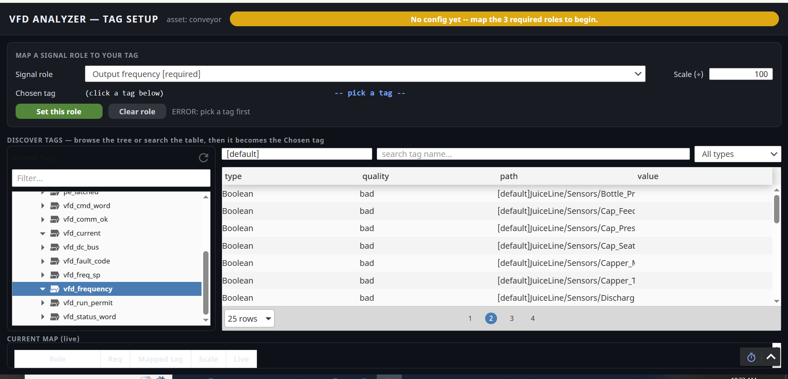

You rebuilt the Tag Setup page into a big-slots matching game and it looks good — live values flow in, the backbone is solid. But it still isn’t a guided experience, and even you, its designer, weren’t sure what it was asking you to do. That’s not a you problem. It’s a structure problem, and every world-class tool solves it the same way.

It hits five of the classic onboarding anti-patterns — the same ones the best tools are built to avoid:
Note: your big-slots redesign already corrected #4 (sample values) and partly #3 (slots). This report is about finishing the job — the gated funnel around it.
Across 26 tools and five categories, the winning shape is identical: a gated, progressive four-step funnel. Each step does one job and unlocks the next only when it’s valid.
┌──────────────┐ ┌──────────────┐ ┌──────────────┐ ┌──────────────┐
│ 1. CONNECT │──▶│ 2. VERIFY │──▶│ 3. MAP │──▶│ 4. SAVE │
│ pick the │ │ prove it's │ │ match tags │ │ store + │
│ data source │ │ really live │ │ to roles │ │ reuse │
└──────────────┘ └──────────────┘ └──────────────┘ └──────────────┘
provider + "42 tags, 38 slots + only readiness gate,
tag folder good" sample fitting tags, approve, save as
before mapping suggested + live reusable template
│ │ │ │
└─ gate: a folder ─┴─ gate: ≥1 good ──┴─ gate: required ─┘
is chosen live tag fields all mapped
The same idea, three industries:
| Tool | Connect | Verify | Map | Save |
|---|---|---|---|---|
| Flatfile (CSV import) | upload file | preview & header detect | auto-match columns → fields | submit / reusable config |
| Fivetran (data pipeline) | pick source | Save & Test connection battery | include/exclude schema | saved connector |
| HighByte (industrial) | connect OPC/MQTT | browse live values | Model ↔ Instance binding | deploy, reusable model |
| Hightouch (reverse-ETL) | model + destination | preview rows | Suggest mappings + confirm | saved sync |
Ranked by impact for our tag-setup case. “Apply” = how we’d use it.
| Pattern | What it is | Who does it best | How we apply it |
|---|---|---|---|
| Test-connection gate | An explicit “test” before mapping; can’t proceed until it passes. | Fivetran (Save&Test), Matillion, Census, KEPServerEX (Quick Client) | A Verify step: scan the folder, show tag count + live sample, gate Next on ≥1 good tag. |
| Auto-match + confidence | Fuzzy name-match pre-fills the target; user confirms. | Boomi Suggest (High/Med/Low tiers), Hightouch (Suggest mappings), Census (Generate Mappings) | Local fuzzy match of tag names → pre-fill each slot + a “suggested — confirm?” badge + Accept-all. |
| Required-field progress meter | “Mapped 2 of 3 required”; Save greyed until complete. | Flatfile, CSVbox, OneSchema, Stitch (“Not Configured”) | A live “N of 3 required” meter (we already compute this) + disabled Finish until 3/3. |
| Sample value beside each candidate | Show 3–5 live values so the user recognizes the right field. | Dromo, CSVbox, MuleSoft (live Preview) | Already in the big-slots table (live value + quality dot). Keep & extend to Verify. |
| Datatype pre-filter | Only show candidates whose type fits the target. | Osmos, CSVbox, our own redesign | Already shipped: analog role → only Float/Int tags. Kills the Boolean wall. |
| Semantic / fuzzy naming | Match “MSRP”↔“Price”, not just exact strings. | Osmos (LLM), Flatfile (ML), Hightouch | Simple token match: freq/hz→Output frequency, amp/current→Output current. |
| Inline type validation | Green check / red X per row as you map. | Dromo, CSVbox, Power Automate (Flow checker) | Reuse our live preview & quality color (amber needs / green good / red bad). |
| Issue filtering | Show only the rows with problems, not all 10,000. | Osmos, Flatfile, Dromo | Verify step flags only the bad-quality tags to fix first. |
| Save-as-reusable-template | Save the mapping; auto-apply to the next identical source. | OneSchema, Flatfile, HighByte (Model↔Instance) | Per-asset config today; a “reuse on another drive” template is the Slice-2 moat. |
| Back-navigable stepper | “Step X of Y”, emphasized current step, Back always allowed. | USWDS, W3C forms, Matillion, Stitch | 4 numbered pills + show/hide sections; Next disabled until the step validates. |
Keep the matching game — it’s good. Wrap it in the four-step funnel, add Verify in front, a progress meter on Map, and a lightweight auto-suggest. Here’s the whole flow.
Choose the tag provider and the drive’s folder (e.g. [default]MIRA_IOCheck/VFD). This replaces
today’s hard-coded scope, so the analyzer works on any drive’s tags.
STEP 1 of 4 ─ CONNECT ──────────────────────────────────────────────
● 1 Connect ○ 2 Verify ○ 3 Map ○ 4 Save
Where are this drive's tags?
Provider: [ default ▼ ]
Folder: [default]MIRA_IOCheck/VFD [ Browse… ]
└ Plant/Line1/Drive3 └ MIRA_IOCheck/VFD ◀ chosen
[ Use this folder ]
[ Next ▸ ] (enabled)
One “Test data source” click scans the folder and shows what’s really there, with live values moving. This is the trust step every great tool has and ours never did.
STEP 2 of 4 ─ VERIFY ───────────────────────────────────────────────
✓ 1 Connect ● 2 Verify ○ 3 Map ○ 4 Save [ Test data source ]
Found 42 tags ● 38 good ● 4 bad READY
Types: Float 9 · Int 6 · Bool 25 · String 2
sample (live) value quality
─────────────────────────────────────────────────────
vfd_frequency 47.31 ● good
vfd_current 6.20 ● good
vfd_dc_bus 320.10 ● good
sensor_bottle_present false ● bad ← check link
[ Next ▸ ]
Your big-slots screen, now scoped to the chosen folder, with a progress meter and lightweight auto-suggest: we fuzzy-match tag names, pre-fill the best guess, and you confirm (or change).
STEP 3 of 4 ─ MAP ────────────────── Mapped 2 of 3 required ───────
✓ 1 Connect ✓ 2 Verify ● 3 Map ○ 4 Save [ ✓ Accept all suggestions ]
① Output frequency Hz suggested ▸ vfd_frequency =47.3Hz [✓][change]
② Output current A suggested ▸ vfd_current =6.2 A [✓][change]
③ Fault code code suggested ▸ vfd_fault_code =0 [✓][change]
─────────────────────────────────────────────────────────────────────
[ + Add optional signals (15) ]
freq/hz → Output frequency). Anything unsure stays empty — never guessed.
No cloud, no AI service. Hightouch and Boomi both prove this small move feels like magic.Confirm the map, see the readiness gate, and save. The train-before-deploy approval stays: free features (trend, fault decode, anomaly) work immediately; Ask MIRA unlocks on approval.
STEP 4 of 4 ─ SAVE ─────────────────────────────────────────────────
✓ 1 Connect ✓ 2 Verify ✓ 3 Map ● 4 Save 3 of 3 ready
Role Mapped tag Live
───────────────────────────────────────────────
Output frequency vfd_frequency 47.3 Hz ✓
Output current vfd_current 6.2 A ✓
Fault code vfd_fault_code 0 ✓
Approval: ◻ not approved "Trend + Decode + Anomaly work now;
Ask MIRA unlocks on approval."
[ ✓ Save & Finish ]
Ignition Perspective 8.3.4 on the bench has no rich stepper widget (and no flex-repeater). We don’t need one. The whole pattern is buildable with plain containers, labels, and buttons — exactly what USWDS and W3C recommend:
visible = “current step == N”
(the same show/hide we already use for the optional-signals panel).enabled only when that step validates
(folder chosen / ≥1 good tag / 3-of-3 required). You physically can’t skip ahead.| Step | Reuses (already built) | New (small, additive) |
|---|---|---|
| 1 Connect | browse_tags, cached _scan_all | provider_options, browse_nodes |
| 2 Verify | scan_tags, _live, quality checks | verify_summary, verify_sample, verify_breakdown |
| 3 Map | entire current view + scan_for_role, preview, slot_*, set_role, gate_text | is_ready, optional suggest_for_role (fuzzy) |
| 4 Save | rows_markdown, gate_text/color, set_role | finalize (approve + save) |
system.tag.getProviders() on the gateway
(fail-soft to “default”); reuse the proven table pattern (flat rows + onRowClick); run one-shot
actions (Test, Save) from event scripts, not polling bindings. All new helpers are additive & Jython-2.7-safe.assetId is required save error.
Root cause: the writer only set assetId on a brand-new config; on an existing/edited tag it
re-validated without re-asserting it. Hardened the writer to always assert identity, and the view to pass a
non-empty asset. Proven against the real validator; 68 parity tests stay green.| Phase | What ships | Why |
|---|---|---|
| Now (done) | Save-bug fix + this report | Unblock saving; align on the path before building. |
| v1 | 4-step wizard (Connect / Verify / Map / Save) wrapping the matching game; manual mapping; required-field progress meter; Verify step. | The gated funnel. Turns a wall into a guided flow. ~90% reuse. |
| v1.1 | Lightweight local auto-suggest (fuzzy tag-name match → pre-fill + “suggested” badge + Accept-all). | The “magic” moment, with zero cloud dependency. |
| Slice 2 | Cloud AI auto-classifier + Hub proposals + reusable templates across drives/projects. | The moat: map a new drive in seconds by adapting an approved template. |
testing sandbox,
live-test it, then promote to ConvSimpleLive. The full implementation blueprint is ready to execute on approval.Per product: step model · how it verifies · mapping UX · save/reuse. Sources listed at the end.
| Product | Step model & verify | Mapping UX | Save / reuse |
|---|---|---|---|
| Flatfile | File → Map → Validate → Submit; header-detect preview | ML auto-match trained on millions of mappings; confirm/reject; concatenation | Reusable import config |
| OneSchema | Upload → Map → Configure → Resolve errors | Fuzzy “inexact match” algorithm; configure-once, auto-apply later | Saved header templates |
| Dromo | File → Map → Validate → Import; in-browser validation | AI header+synonym match (MSRP↔Price); drag-to-match; real-time errors | Schema Studio definitions |
| Osmos | Upload → AutoMap → Verify/Adjust → Submit | LLM semantic match; filter by mapped/required/error; 5 cleanup tools | Reusable transforms |
| CSVbox | File → Map → Validate → Submit; shows counts upfront | AI header detect; override; required/optional/ignored; mobile-friendly | Saved importer config |
| ImportCSV | Upload → Map (confidence %) → Validate → Import | Embedding similarity with confidence %; auto-approve high, review low | — |
| TableFlow | Upload → Header row → Preview → Map → Import | AI header detect + auto-map; multi-source combine | Importer template param |
| Product | Step model & verify | Mapping UX | Save / reuse |
|---|---|---|---|
| Ignition (OPC) | Create connection → browse OPC → drag tags | Drag-drop from OPC browser; hierarchy preserved; live preview | Tags in Designer |
| HighByte | Connect → Model → Instance → Deploy | Model↔Instance: blueprint then bind real data; no-code; lineage | Reusable models |
| KEPServerEX | Channel → Device → Tag; Quick Client verify | Device wizard; tag groups; naming conventions | Reusable device profiles |
| Litmus Edge | Auto-discover device → one-click onboard → schema | Automated discovery; structured schema output; drag flows | Schema templates |
| Tulip | Connector type → host → Test connection → use | HTTP/MQTT/SQL config; test-before-live; auth options | Reusable connectors |
| Element Unify | Connect → Model → Joins → Deploy | Fuzzy/contains match with similarity threshold dial; lineage | Asset data models |
| N3uron | Node → connectors → protocol → deploy | Drag-drop config; modular connectors; transform modules | Reusable nodes |
| Product | Step model & verify | Mapping UX | Save / reuse |
|---|---|---|---|
| Zapier | Trigger/action cards; “Test step” fetches a real record (or sample data) | Map prior output into fields as pills carrying source + sample value; flags missing required | Zaps + templates |
| Make | Node graph; “Run once” pins a real output bundle | Drag dynamic items into fields; hovering pulses the source module | Scenarios / blueprints |
| Workato | Linear recipe; test runs | Datapills dragged from a datatree; type-matching enforced | Recipes (shareable) |
| Boomi | Map component; process test mode | Boomi Suggest: community-sourced suggestions in High/Med/Low tiers; checkmark=accept; Clear-all | Reusable Map component |
| MuleSoft | Define I/O → map → preview; live Preview with sample data | Drag element-to-element; identical names auto-map; writes DataWeave | DataWeave scripts |
| Power Automate | Action cards; always-on Flow checker + Test Flow (mock results) | Dynamic-content tokens; per-connection green-check status | Solutions / templates |
| Product | Step model & verify | Mapping UX | Save / reuse |
|---|---|---|---|
| Fivetran | Source → dest → setup guide; “Save & Test” named test battery | Schema include/exclude; blocking strategy | Saved connector; “Save for later” |
| Airbyte | Source+dest → schema fetch → select streams → set up | Stream/field toggles; auto-selects sync mode + primary keys | Saved connection |
| Hightouch | Model+dest → record-match → field mapping | “Suggest mappings” fuzzy pre-fill, confirm before save; (recommended) badges; required + paired fields | Saved sync; reusable models |
| Census | Source → dest (“Connect to save and test”) → keys → mapping | “Generate Mappings” auto-maps name matches; manual for the rest; non-destructive | Saved sync (scheduled) |
| Stitch | Connect → structure-sync/discovery → select tables; “Not Configured” until valid | Checkbox tables/columns; bulk select-all; replication method | Integration object |
| Matillion | Named-page wizard; Test requires all fields populated | Field transforms later in job canvas | Environments / projects |
| Segment | Add source → add destination → confirm; shows “consequences” before connect | Tracking Plan (schema contract) governs validation | Plans applied to many sources |
| RudderStack | Source → destination → connect; Live Events confirms receipt | Destination settings + optional transformations | Saved sources/destinations |
Stepper (plain components): the lowest-tech compliant pattern (USWDS Step-Indicator, W3C multi-page forms) is “Step X of Y” text + an emphasized current step name + Back/Next, with Next disabled until the step validates. Matillion gates its Test button on “all fields populated”; Stitch uses a status label (“Not Configured” → valid) as the whole progress model. No custom widget required.
Auto-match + confidence: Boomi shows suggestions in High/Med/Low tiers with checkbox-accept and a Clear-all reset; Hightouch fuzzy-pre-fills and tells you to confirm before saving; Census auto-maps the obvious and leaves the ambiguous. Simplest version that still feels smart (our choice): fuzzy name-match → pre-fill + a “suggested” badge to confirm + an Accept-all button. No fabricated percentage.
Flatfile (flatfile.com/blog) · OneSchema (oneschema.co/blog) · Dromo (dromo.io/blog) · Osmos (osmos.io/blog, docs.osmos.io) · CSVbox (blog.csvbox.io) · ImportCSV (importcsv.com/blog) · TableFlow (github.com/tableflowhq) · Ignition (docs.inductiveautomation.com) · HighByte (highbyte.com/blog) · KEPServerEX (PTC manual) · Litmus (litmus.io/blog) · Tulip (support.tulip.co) · Element Unify (aws.amazon.com/blogs/industries) · N3uron (n3uron.com) · Zapier (docs.zapier.com) · Make (help.make.com) · Workato (docs.workato.com) · Boomi (help.boomi.com) · MuleSoft (docs.mulesoft.com) · Power Automate (learn.microsoft.com) · Fivetran (fivetran.com/docs) · Airbyte (docs.airbyte.com) · Hightouch (hightouch.com/docs) · Census (docs.getcensus.com) · Stitch (stitchdata.com/docs) · Matillion (docs.matillion.com) · Segment (twilio.com/docs/segment) · RudderStack (rudderstack.com/docs) · UX: USWDS Step-Indicator, W3C/WAI multi-page forms, Smart Interface Design Patterns.